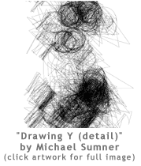
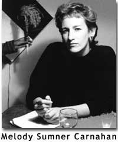

|
by Melody Sumner Carnahan, Joan La Barbara, Robert Ashley and Michael Sumner
Working Note THE X, Y, Z OF IT is a half-hour audio composition designed to be heard from beginning to end at one sitting. The spoken text is a logical statement of the illogical nature of truth. Presented in four sections with a coda, the musical structuring of the words is broadly derived from North Indian Raga in that a principal musician (the voice of Robert Ashley) is at first followed and then met by a second musician (the voice of Joan La Barbara) and later other musicians/voices/sounds join in and at times overwhelm them. Ideally, a sustained mood of openness is invoked that gently colors the mind. The two principals engage in dialectic opposing the physical world to the immaterial. They are also talking about the difficulties inherent in human relationships. When the seemingly disembodied “distance professors” have achieved a kind of stasis, we are catapulted into the middle of an after-lecture party where some of the same ideas are put forward in a new way by a quartet of men and women flirting and laughing as they try to make sense of things. —Melody Sumner Carnahan, writer, 2001
THE DRAWINGS and the audiowork accompany each other but there is no intention of literal illustration or direct comparison. They are two different events that can mix and influence the experience of each other in unpredictable ways, like looking out the window while talking on the telephone. — Michael Sumner, artist, 2001
Audiowork Credits NOTE: the audiowork as presented in HOW2 is a 20 minute excerpt of the full 29 minute piece The X,
Y, Z of It principal
voices: additional
voices: sound engineering: sound design: music by
Mayim Alpert, and Spilt (David Smith and James Hurley) The audiowork was commissioned by and mastered at ABC Radio Arts, Sydney, Australia, November 2000. Robert Ashley was recorded at his Beach Street studio in New York City. Joan La Barbara was recorded in Santa Fe, New Mexico. Melody Sumner
Carnahan <mscbrnbx@nets.com>
ABOUT The X, Y, Z of It by Sumner Carnahan There is no distance as we know it… The scientist says: “It’s a critique of theoretical science using physical models of space to engage the complexity of human relationships.” The musician says: “It’s a raga. The principal musician begins. Is joined by an acolyte, who with her great skill threatens to supercede him. Then a host of other musicians joins in, but a kind of balance is achieved in the end…” The sensualist adds: “Yes, and after that chaos ensues: It’s a party of revellers who have been bitten by the lecture (of the ‘distance professors’) and they try to digest it as they flirt their way back to earth.” The visual artist says: “The recurring whistle was suggested by a Japanese deer chaser, which is a sound that occurs when water fills a trough and spills at intervals -- in this case once per minute. It occurs infrequently enough that when it comes around again it is always a surprise.” The lover says: “It’s about the difficulty of being confined in a single human body. All our problems begin here. We suffer and cause suffering from not being able to merge with others, to incorporate them truly into ourselves.” The engineer questions: “Is this exactly where you want the ‘lozenge-shaped’ universe, as you call it, to intersect with the ‘distance professors,’ or a bit farther on?” The writer says: “Technically, the work began with the story I wrote while spending four days camping on an alluvial fan in Death Valley. Michael Sumner (my partner) had suggested the idea that the energy used in ‘walking away’ simply makes a person get physically smaller but they do not literally move farther away, and the process is reversible. “Robert Ashley wanted to read the piece aloud. He sent me his recording and I was surprised by the pacing (he always surprises me). I asked Joan to do a reading as counterpoint. The night she returned from Iceland she recorded the text and delivered it the next morning as I was leaving for Australia. I had been invited as “Creative Media Arts Fellow 2000” to present my work at University of Technology in Sydney, and to produce a radio work for ABC Radio Arts. The audiowork took form, derived from dreaming at night, radio broadcasts in the early morn, and using the material brought along. “One day the executive producer suggested, don’t you want to use a few actors? I said I’ve never worked with actors! He said, these actors are very intelligent. After the third gentle suggestion from this tall kind human being I said yes, okay, and he said they will be here tomorrow. I went home and wrote the playlet that is the final act. Releasing us back into the everyday world.” Bios: Writer, composer, and producer of audiowork: Melody Sumner Carnahan has worked with musicians, composers, and artists for the past seventeen years providing stories and texts for performances, audioworks, installations, and film. She received an MFA from Mills College studying at the Center for Contemporary Music where she began collaborating with Laetitia Sonami—an on-going collaboration in which Carnahan words are used for Sonami’s “performance novel” works. Commissions have come from New York’s Experimental Intermedia Foundation, New American Radio, CBC in Canada, NTT/ICC in Tokyo, and ABC in Sydney, Australia, where Carnahan was Creative Media Arts Fellow 2000, writing and producing a half-hour audiowork, The X, Y, Z of It, with the voices of Robert Ashley and Joan La Barbara. Her short works have been published in over thirty-five magazines and anthologies, and she has five books in print, including her IPPY award-winning audiofiction from Frog Peak, The Time Is Now— a collaboration with fourteen composers. Four of her stories are included on Morton Subotnick’s Gestures, a DVD-CDrom release from Mode records, 2001. Charles Shere wrote in the Oakland Tribune, “There have been few precedents to this kind of sustained avant-garde literature with a moving human content.” Kyle Gann in the Village Voice described Carnahan’s writing as “The most musical prose since Gertrude Stein.” A founding editor of Burning Books, Carnahan was a long-time resident of the San Francisco Bay Area. She lives in Santa Fe, New Mexico.
Principal voices: Robert Ashley is known for his work in new opera and multimedia. During the 1960s he organized and directed the legendary ONCE Festivals and ONCE group in Ann Arbor, Michigan. In the 1970s he directed the Center for Contemporary Music at Mills College, toured with the Sonic Arts Union, and produced and directed Music with Roots in the Aether, a 14-hour television opera/documentary about the work and ideas of seven American composers. Ashley wrote and produced Perfect Lives, an opera for television, widely considered to be the precursor of MTV. Staged versions of his operas including Perfect Lives, Atalanta, and the monumental tetrology Now Eleanor’s Idea, in which he performs as a vocalist, have toured throughout Europe, Asia, and the United States. Recently he completed Balseros for the Florida Grand Opera, When Famous Last Words Fail You for the American Composers Orchestra, Your Money My Life Good-Bye for Bayerischer Rundfunk, and Dust for the Kanagawa Prefectural Concert Hall in Yokohama, to be performed in Paris, at the Paris Quartier d’Eté Festival at the Palais Royale, July 2001, and in September Gulbenkian Foundation in Lisbon, Portugal. Joan La Barbara’s career as a composer/performer/sound artist explores the human voice as a multi-faceted instrument, expanding traditional boundaries in compositions for multiple voices, chamber ensemble, music theater, orchestra and interactive technology, using a unique vocabulary of experimental and extended vocal techniques that have become her “signature sounds.” She has received awards and honors including seven N.E.A. grants and the prestigious DAAD Artist-in Residency in Berlin. La Barbara composed and performed the “angel voice” for actress Emmannuelle Béart in the feature film Date with an Angel, performed the “newborn vocals” for Alien: Resurrection, and the solo vocals for John Frizzell’s score for I Still Know What You Did Last Summer. She has premiered landmark compositions written for her by noted American composers including Robert Ashley, John Cage, Morton Feldman, Philip Glass, Alvin Lucier, Morton Subotnick, and James Tenney, and has been soloist in her own compositions.
Digital drawings: Michael Sumner is a graphic artist who has designed books for major museums and publishers including the Solomon R. Guggenheim Museum in New York City, and Thames and Hudson of London. He is currently producing “drawings” created from digital sources. He is the designer and co-founder of Burning Books, and has lived in New Mexico since 1989. go to this issue's table of contents
|
|||||||||||